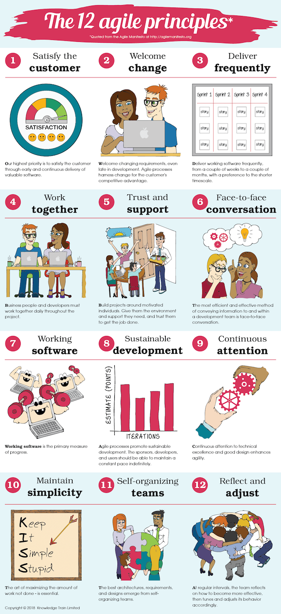
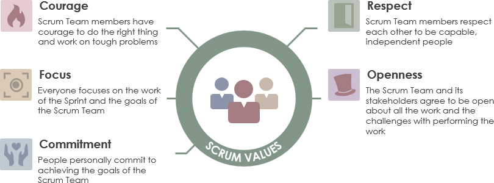
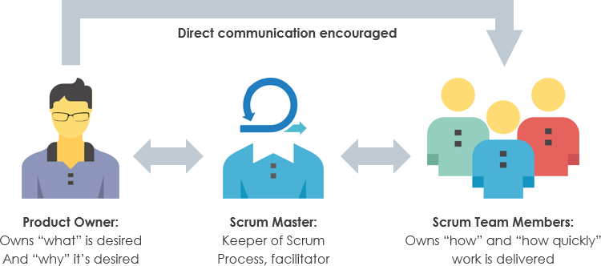
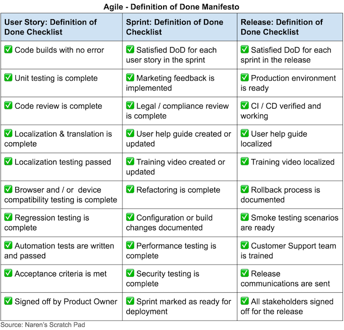

Introduction à la méthodologie Agile et Scrum
Introduction
Tu dois être bien organisé quand tu travailles sur un projet, surtout quand tu travailles sur de gros projets qui impliquent de nombreux développeurs.
Pour cela, il est important d'avoir de l'agilité pour être capable de s'adapter au changement facilement et rapidement pour réagir aux changements ou aux opportunités du marché.
La méthodologie Scrum fournit un ensemble d'outils et de règles pour aider les équipes à être plus agiles et plus organisées.
Dans cette quête, nous allons parler de ce qu'est Scrum et Agile et comment l'utiliser sur vos projets.
🤓 À la fin de cette conférence, tu comprendras :
- ✅ Ce qu'est Agile
- ✅ Qu'est-ce que SCRUM
- ✅ Comment créer un product backlog
📕 L'histoire d’agile ?
L'agile est née d'une observation : durant les années 90, le développement de logiciels a connu une crise.
À cette époque les ordinateurs étaient de plus en plus performants, le marché changeait, mais l'industrie n'était pas capable de s'adapter.
Le temps entre les besoins des entreprises et la production était d'environ trois ans...
En conséquence, de nombreux projets ont été annulés parce que, le temps qu'ils soient lancés, le produit était déjà obsolète.
Un groupe de développeurs de logiciels a décidé de s'attaquer à ce problème et de trouver une solution.
Au printemps 2000, 17 développeurs de logiciels se sont réunis en Oregon pour "parler, skier, se détendre, et essayer de trouver un terrain d'entente - et bien sûr, pour manger" et c'est ainsi que le manifeste agile est né !
✒️ Le manifeste agile
Le manifeste agile est une liste de quatre valeurs et douze principes.
Ces quatre valeurs sont :
- Les Individus et les interactions sont plus importants que les processus et les outils
- Un logiciel fonctionnel est plus important qu'une documentation complète
- La Collaboration avec le client est plus importante que la négociation du contrat
- Répondre au changement est plus important que de suivre un plan
🙌 Les douze principes :
- Notre plus grande priorité est de satisfaire le client par une livraison rapide et continue de logiciels de valeur.
- Nous accueillons les demandes de changements, même tardives dans le développement. Les processus agiles exploitent le changement pour l'avantage concurrentiel du client.
- Livrer des logiciels fonctionnels fréquemment, de quelques semaines à quelques mois, avec une préférence pour les délais courts.
- Les personnes clientes et les membres de l'équipe de développement doivent travailler ensemble quotidiennement tout au long du projet.
- Construire des projets autour d'individus motivés. Donnez-leur l'environnement et le soutien dont ils ont besoin, et faites-leur confiance pour faire le travail.
- La méthode la plus efficace pour transmettre des informations à une équipe de développement et au sein de celle-ci est la conversation en face à face.
- Un logiciel fonctionnel est la principale mesure du progrès.
- Les processus agiles favorisent le développement durable. Les sponsors, les développeurs et les utilisateurs doivent être capables de maintenir un rythme constant indéfiniment.
- L'attention constante portée à l'excellence technique et à une bonne conception améliore l'agilité.
- La simplicité--l'art de maximiser la quantité de travail non fait--est essentielle.
- Les meilleures architectures, exigences et conceptions émergent des équipes qui s'organisent elles-mêmes.
- À intervalles réguliers, l'équipe réfléchit à la manière de devenir plus efficace, puis ajuste son comportement en conséquence.

Source : https://www.knowledgetrain.co.uk/agile/agile-principles
☂️ Le parapluie agile
Beaucoup de méthodologies sont issues du manifeste agile.
Ce que nous appelons le "parapluie agile" est un ensemble de méthodes et de cadres de travail construits autour du concept de philosophie agile.
Les cadres agiles et les méthodes sont classées du plus adaptatif (peu de règles à suivre) au plus normatif (plus de règles à suivre).
Le cadre agile le plus utilisé et le plus populaire est appelé scrum.

Source : https://www.pinterest.fr/pin/750201250400410536/
🤷 Scrum ?
Scrum est l'un des Framework agiles les plus utilisés.
Il aide les équipes à travailler et à collaborer ensemble, un peu comme une équipe de rugby qui se prépare pour le grand jeu (le nom de scrum vient du rugby), scrum est axée sur des améliorations continues.
L'idée de scrum est de briser la vision du produit en petites tâches et en petite équipe et de diviser le temps en morceaux de cycles de développement d'une à quatre semaines.
❤️Scrum valeurs

Il y a cinq valeurs dans la méthodologie Scrum qui sont:
- Focus
- Engagement
- Respect
- Ouverture
- Courage
Source : https://www.visual-paradigm.com/scrum/the-5-scrum-values/
🏉 L'équipe scrum
Habituellement, une équipe scrum est composée
- d'un product owner
- de L'équipe de développement
- du Scrum master

Le Product Owner
Le Product Owner est une figure centrale de l'équipe Scrum.
C'est lui qui possède la vision du produit, il sait pourquoi le produit doit exister, quel problème le produit va résoudre et à qui le produit est destiné.
Il est également le porte-parole de la vision des utilisateurs et des stakeholders (la direction).
Son rôle principal est de filtrer, attribuer et prioriser la tâche (les témoignages d'utilisateurs) en tenant compte de leur impact potentiel sur l'entreprise.
Le product backlog
Le product backlog est une liste de tâches.
Une tâche peut être :
- Une nouvelle fonctionnalité
- Une amélioration d'une fonctionnalité existante
- Un bug fix
- Un changement d'infrastructure
Le backlog est la seule chose à laquelle tu peux te référer quand tu travailles dans une équipe scrum.
Rien ne peut être fait qui n'est pas dans le product backlog.
Les tâches du product backlog sont généralement rédigées sous forme d'histoires écrites selon le point de vue de l'utilisateur. Nous les appelons user stories.
User stories
Les user stories sont une façon structurée d'exprimer un besoin utilisateur.
Elles sont une simple description de la tâche à accomplir écrite du point de vue d'un utilisateur.
Une histoire d'utilisateur doit être écrite suivant cette structure:
En tant que [personne], je [veux], [afin que]
Ex :
En tant que manager, je veux être capable de comprendre les progrès de mon équipe, afin de mieux rendre compte de nos succès et de nos échecs.
💬 Témoignages d'utilisateurs - INVEST
Pour vérifier la qualité d'une user story, nous pouvons utiliser les critères INVEST.
-
Indépendant: Chaque user story doit être indépendante des autres.
-
Négociable Les détails doivent être négociables. En fait, il faut répondre aux questions "Quoi" et "Pourquoi", mais pas aux questions "Comment".
-
Valeur Les user stories doivent soutenir la valeur commerciale. Cette valeur commerciale doit être claire.
-
Estimable Une histoire d'utilisateur doit pouvoir être estimée par l'équipe de développement.
-
Small Une histoire d'utilisateur doit être assez petite pour pouvoir être réalisée en peu de temps.
-
Testable Une histoire d'utilisateur doit être facilement testable grâce à des critères d'acceptation.
🏃 Le sprint
Le sprint est le coeur de scrum. Les sprints sont de courtes périodes de temps pendant lesquelles l'équipe scrum va travailler à la réalisation de certaines tâches spécifiques.
Un sprint peut durer d'une semaine à un maximum d'un mois.
Le sprint démarre par un planning qui consiste à préparer le sprint et se termine par la rétrospective.
Pendant le sprint, l'équipe tient des réunions quotidiennes pour partager ce que chacun fait et faire part des difficultés éventuelles.
✅ Définition of done
Il est important de fixer la définition quand une tâche ou un projet est considéré comme "fait".
Pour cela, il existe un ensemble de critères qui pourraient être définis.
Voici un exemple de liste de contrôle pour la définition of "done":

📚 Ressources
Si tu veux en savoir plus sur scrum, consulte le guide officiel scrum ici :
false|||true|||true
# Quelles solutions les méthodes agiles apportent-elles ?
[x] Être plus flexible
[x] Réagir au changement
[] Créer des process
[] Créer de la documentation
# Quel est le framework Agile le plus utilisé ?
[x] Scrum
[] Kanban
[] XP
[] RUP
[] Cristal
# Qu'est-ce qu'un sprint ?
[x] Une courte période de temps pendant laquelle l'équipe travaille
[] Un marathon
[] Une technique pour rester concentré pendant la journée
# Quelle est la durée habituelle d'un sprint ?
[x] 1 semaine - 1 mois
[] 1 heure - 1 jour
[] 1 jour - 1 semaine
Ressources partagées sur cette quête
- Une vidéo en français qui explique le fonctionnement de la méthode Agilehttps://www.youtube.com/watch?v=anZcEIQlpoY
- Product Owner : quel est son rôle ? (FR)https://www.youtube.com/watch?v=PgniBA8HPBk
- Les user storieshttps://vitalitychicago.com/blog/how-to-user-story/
- Vidéo en français, tout y est bien expliqué dedanshttps://www.youtube.com/watch?v=PdKECeJa5HA